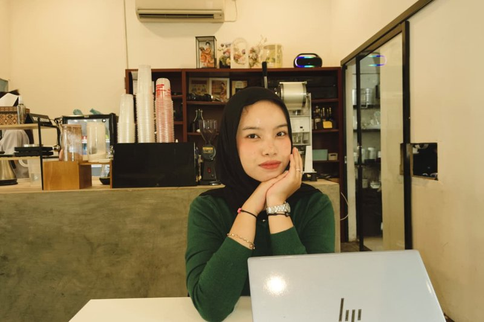

Selamat datang di mini-situs saya! Hobi yang paling saya suka adalah fotografi. Bagi saya, setiap foto adalah cerita singkat yang membekukan satu momen agar bisa dikenang kembali.
Fotografi sangat bergantung pada cahaya. Bukaan lensa biasanya ditulis f/2.8, kecepatan rana diukur dalam detik (misalnya 1/60 s), dan pencahayaan dinyatakan dengan satuan EV. Satuan luas sensor pun memakai cm2, sedangkan kode kamera favorit saya diberi nama X100. Di situs ini saya berbagi kegiatan dan hasil jepretan yang saya kumpulkan.

Silakan lihat halaman lainnya: Daftar Kegiatan dan Galeri Foto.